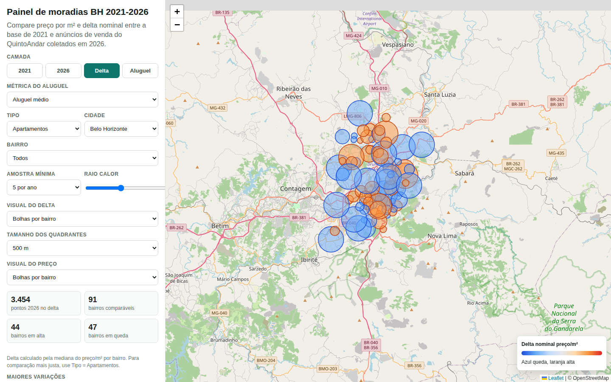

Mapa de Valores Imobiliários em Belo Horizonte
Saí de um assunto conhecido para investigar os preços de imóveis em Belo Horizonte. Antes de chegar ao mapa, precisei lidar com endereços, anúncios repetidos e fontes que não foram feitas para conversar entre si.

De onde veio
Quis fazer um projeto de dados fora do esporte. Os anúncios de imóveis de Belo Horizonte me deram uma pergunta concreta: como valores de venda, aluguel e condomínio aparecem em diferentes partes da cidade?
O que tentei construir
Um mapa para explorar anúncios e bases públicas por bairro e tipo de valor. A interface permite alternar camadas, consultar métricas e aproximar regiões para olhar os dados com mais detalhe.
O trabalho antes do mapa
Os dados chegaram com endereços escritos de formas diferentes, repetições e valores ausentes. Foi preciso tratar essas diferenças antes de colocar pontos e comparações na tela. A parte visual depende de escolhas que acontecem bem antes dela.
O que funciona hoje
O protótipo está publicado e pode ser aberto no navegador. Há camadas da base de 2021 e de anúncios de 2026, com filtros para explorar venda, aluguel e outros valores. As imagens e a demonstração mostram interações com esse mapa.
Como ler os resultados
Anúncios não representam todos os imóveis de Belo Horizonte, e um preço anunciado não é necessariamente o preço de uma negociação. As bases de períodos diferentes também têm coberturas diferentes. A comparação ajuda a formular perguntas; sozinha, não mede a valorização de toda a cidade.
O que levei daqui
Aprendi bastante ao trabalhar com fontes que não chegaram prontas para análise. O projeto me fez pensar tanto no tratamento dos dados quanto no cuidado necessário para mostrar uma comparação sem prometer mais do que a amostra permite.
Com o que construí
- HTML
- JavaScript
- Coleta de dados na web
- Dados públicos
- Limpeza de dados
- Mapas interativos